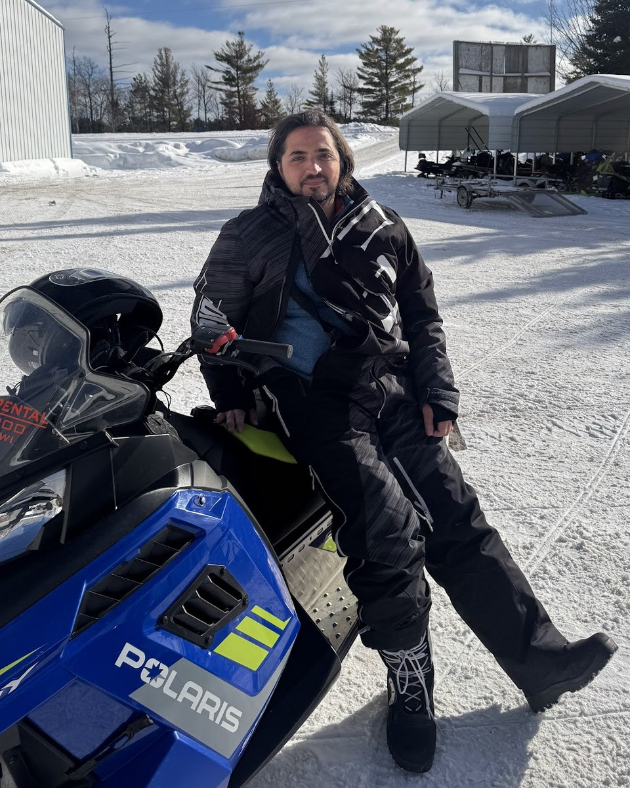

Alex Peysakhovich
Partner at Sutter Hill Ventures
- Role
- I help our biotech incubations and portfolio companies build their AI stacks.
- Focus
- Generative models for protein engineering and small molecule design. Computer vision models for microscopy.
- Past
- Facebook AI Research, working on RL, graphs, and multi-agent cooperation. Ran applied ML at Facebook News Feed, focusing on ranking, network effect estimation, and algorithm alignment.
